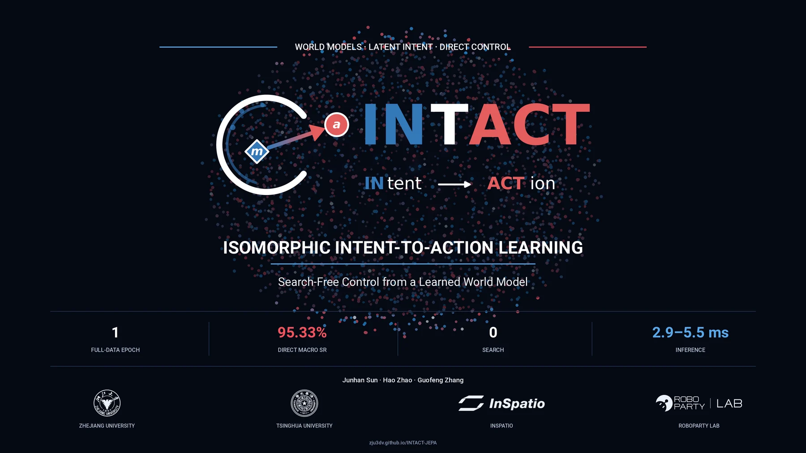

INTACT completes the intent-to-action loop in an end-to-end JEPA. It grounds deployable goal queries with local successor supervision, exposing a direct action interface while preserving the learned world representation.
- Training
- 1 epoch
- Direct macro SR
- 95.33%
- Test-time search
- 0
- Inference
- 2.9-5.5 ms